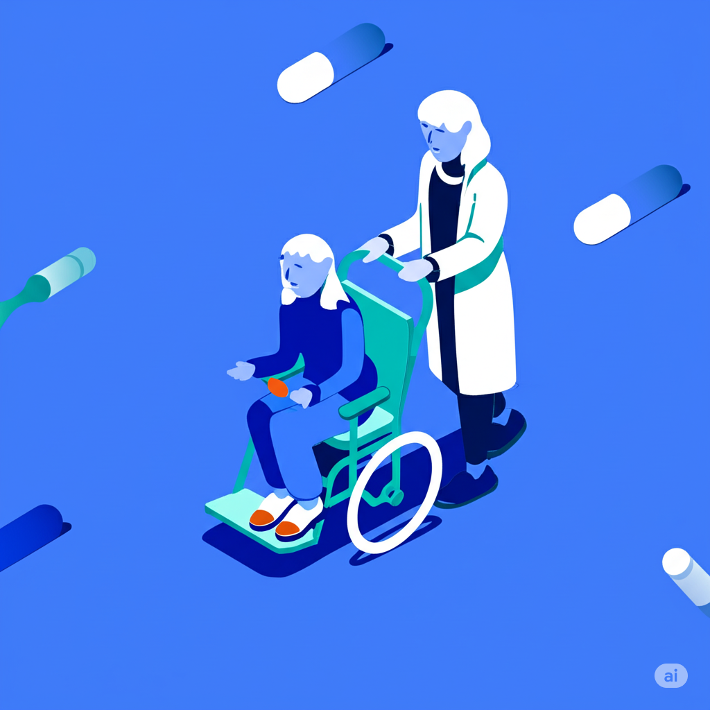
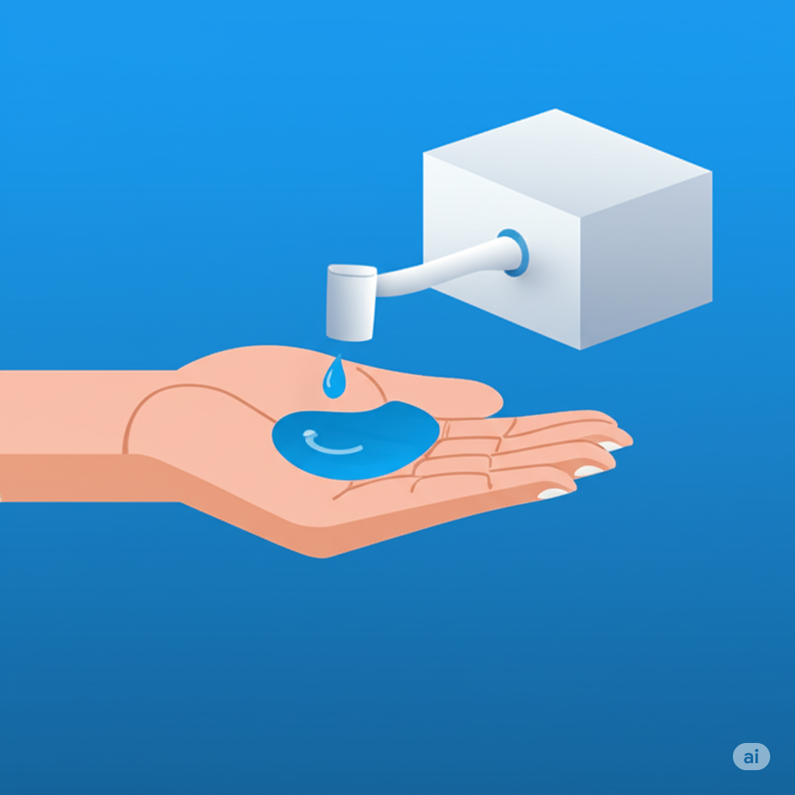
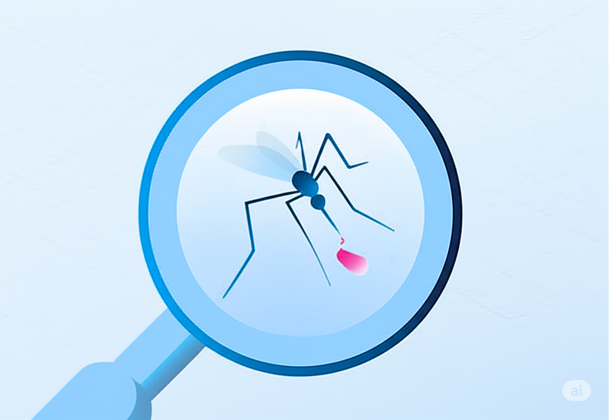

AI In Health Care
Medical library
Help
Diagnosis
Health.
Powered by Samson.
Supporting better health outcomes and clinical excellence with
intelligent technology.
Medical library
Good information leads to better health choices.
Medical Library is a great place to look for answers about your health.
Its full of easy-to-understand tips to help you stay well and learn
more about conditions and symptoms.
Created by our doctors and grounded in the latest research, its here
to help you understand your health.
Diagnose
Get started
Take care of yourself

Living with Friedreichs
ataxia
What is it like to live with Friedreich’s ataxia?,
Learn how to improve symptoms and quality
of life with therapy, exercise, and helpful
tools.
Read more

How to deal with COVID-
related skin issues
From dried-out hands to “maskne” to
unusual levels of sensitivity, the COVID
pandemic put our skin through a lot. How
can you help your skin recover?
Read more

The 6 most common
mosquito-borne diseases
Mosquito bites are always annoying but in
some cases, they may also spread disease.
Learn more about the 6 most common
mosquito diseases and how to protect
yourself.
Read more
Get started today
AI In Health Care
Health.
Powered by Samson.
Supporting better health outcomes and
clinical excellence with intelligent
technology.
Medical library
Good information leads to better health choices.
Medical Library is a great place to look for answers about your health.
Its full of easy-to-understand tips to help you stay well and learn
more about conditions and symptoms.
Created by our doctors and grounded in the latest research, its here
to help you understand your health.
Diagnose
Get started
Take care of yourself
Living with Friedreichs
ataxia
What is it like to live with Friedreichs
ataxia? Learn how to improve symptoms
and quality of life with therapy, exercise,
and helpful tools.
Read more
How to deal with
COVID- related skin issues
From dried-out hands to “maskne”
to unusual levels of sensitivity,
the COVID pandemic put our skin
through a lot. How can you help
your skin recover?
Read more
The 6 most common
mosquito-borne
diseases
Mosquito bites are always
annoying but in some cases, they may
also spread disease. Learn more
about the 6 most common mosquito diseases
and how to protect yourself.
Read more
Prev
Next
Get started today